#
Off-topic Rants
This is a very random collection of old blog posts from the original LateNite blog, Unreal Cafe, Resolve Cafe and Chris Hocking's past personal blogs.
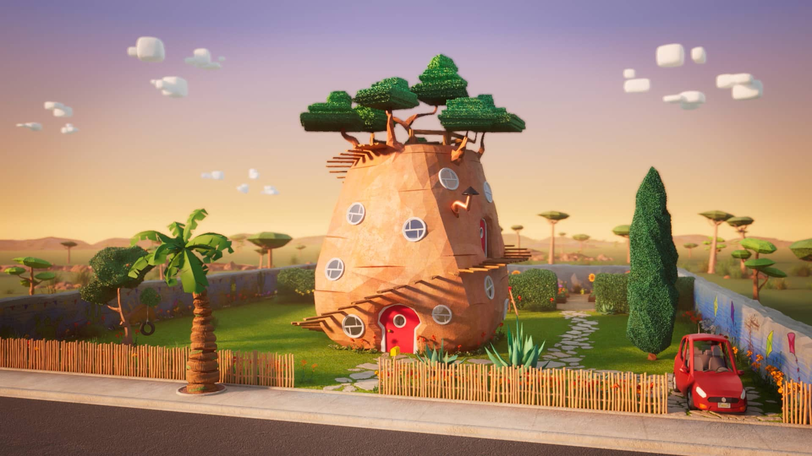
We just watched this awesome 8min pilot for a kids television show called BELLYFANT: Sleepover - created in Unreal Engine. Very fun! It was created and directed by Pete Dodd. You can learn more about BELLYFANT on Pete's website here.
The awesome team at S1T2 have done a great blog post about their Unreal Fest presentation titled, UnrealFest 2023: How lateral thinking could revolutionise your real-time pipeline. You can read it here. I also had an amazing chat with Matt Drummond last night, and here's some awesome facts he didn't mention in his presentation:
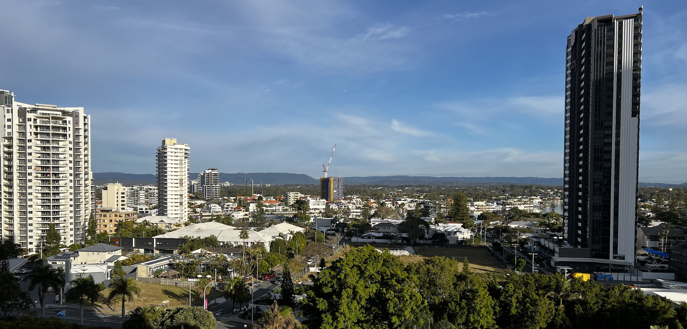
Today is day two (and the final day) of Unreal Fest 2023 in the Gold Coast. Woohoo! I'll be around at Unreal Fest all day, so if you see me, come and say "hi". I'll continue to document the sessions I attend here. Enjoy! Sam Anderson (Technical Marketing Manager @ Epic Games) just did an epic presentation that blew my mind.
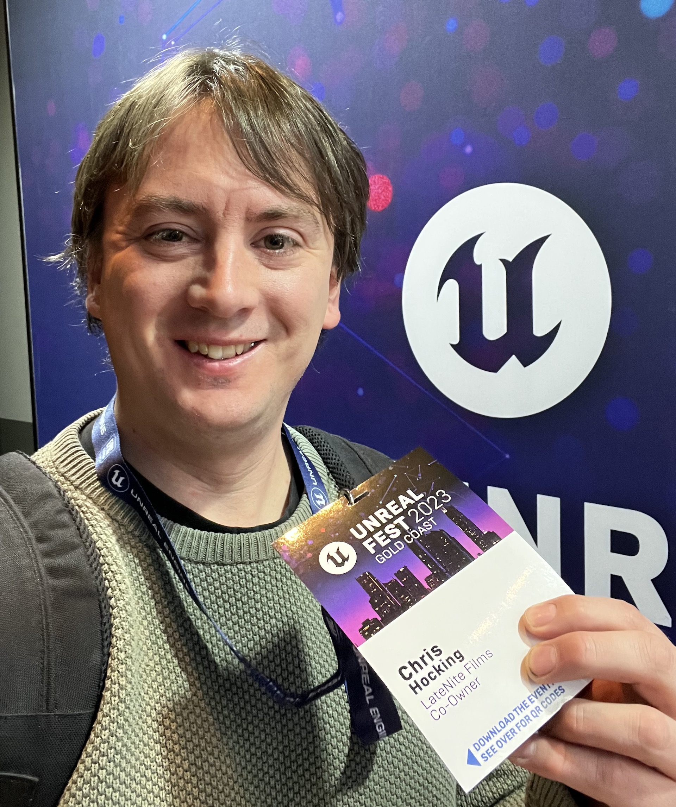
Today is day one of Unreal Fest 2023 in the Gold Coast. Woohoo! I'm on the ground, so if you see me, come and say "hi" - it's Chris from LateNite! Last night was the Welcome Reception at Stingray Lounge, which was a huge amount of fun - free food and drinks, and some of the smartest people in the Unreal world all in the same place.
This blog post was last updated on the 8th June 2018.
I know this is dumb, but it made me giggle. Nice to see Tarkin looking normal again.
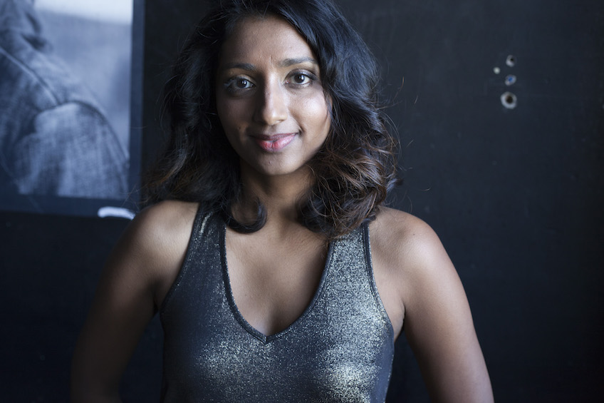
In today’s blog post, we have yet another very special guest. Best known for her role as Priya Kapoor on iconic Network Ten television series Neighbours, Menik Gooneratne has had a film and television career spanning over a decade, encompassing both Australian and international productions, including working with Nicole Kidman on the upcoming feature Lion. Today she talks to us about her experiences on The Wizards of Aus. Enjoy!
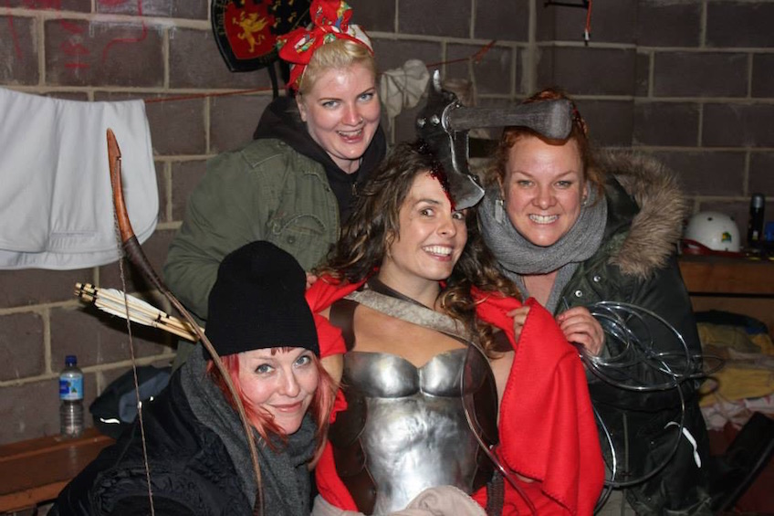
In today’s blog post we have a very special guest, our absolutely incredible Makeup Designer, Marie Kealy. Enjoy! 01_makeup “So Marie. We have this series we want to make and its kinda like everything you did on The Hobbit but crazier, oh & our total budget is probably what they had just for coffee, you interested?”
In this blog post we have two very special guests – first up is longtime collaborator and close friend, our amazing Director of Photography on The Wizards of Aus, the awesome Benjamin Hidalgo De la Barrera, followed by his trusty 1st Camera Assistant, the incredibly hardworking Jonathan Haynes. Enjoy!
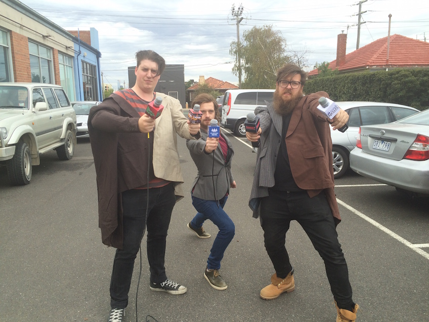
Hello there. My name is Nick Issell, and I’m a screen writer. Feel free to be adequately impressed… Oh, you’re not impressed at all? That seems about adequate to me. Anyway… When my best buddy-boy, Michael Shanks, approached me to co-write The Wizards of Aus with him, I’ll admit, I was a little wary of the idea. The Wizards of Aus was Shanks’ baby and I was tentative to get involved. He’d been throwing around ideas for ‘the wizard thing’ (that was the concept’s profoundly creative working title) for many years. By this point I had been working with Shanks since year 11 - we’d written a number of scripts together (all lost to time, thankful), and I had been present for every episode of Doomsday Arcade. In fact, it was maybe only a few short months after Doomsday finally wrapped, that the Wizards concept first popped from Shank’s fertile brow (yuck). He even shot a few scenes. I played a Spinning Wizard. It was pretty shitty, but even so I was pretty daunted by the idea of meddling with a concept Shanks still clearly held so dear. I also wasn’t particularly interested in working on something I’d have no ownership or claim over - a glorified punch up writer. Thankfully, I was wrong to have such misgivings, and so I signed on for a job that has probably been the best one I’ve ever had.
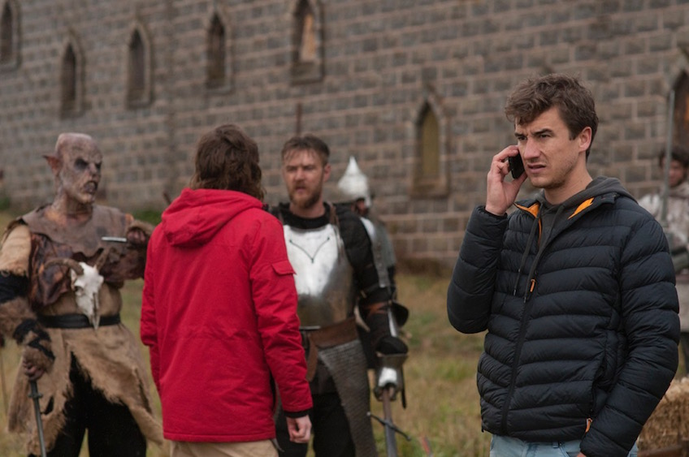
01_nick_on_phone So an extremely talented director (Michael Shanks for those playing at home) that you’ve been working with for a very long time comes to you and says: Screen Australia have approached me to see if I want to do a web series. And I’m thinking we could do this wizard thing I’ve been kicking around for 5 or 6 years.
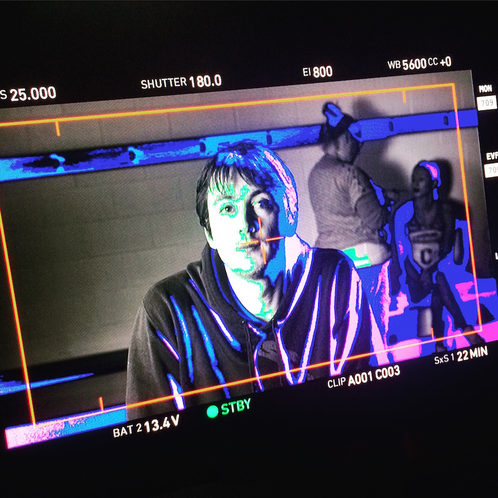
If you haven’t already, check out Part 1 here.
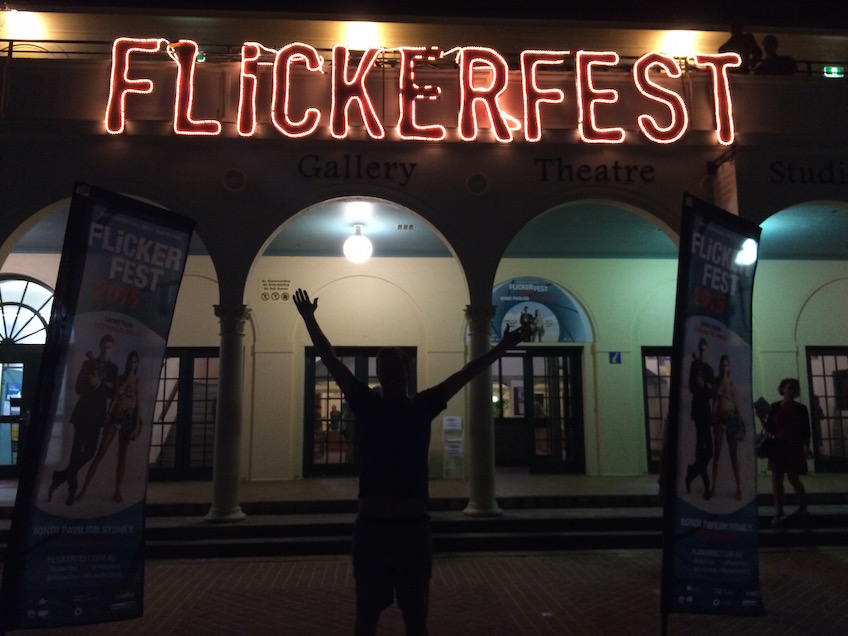
So this is pretty weird. I’m writing to you from the end of the year. THE GOD DAMN FUTURE. Well that’s what it feels like anyway. I swear I just wrote one of these end of year things only a few months back, but then I guess that’s the perfect way to describe this year. We started with our biggest project to date in January and from there the year has sped by, bringing us to a point where we find ourselves on the verge of releasing our first television series unto the world in a little over three weeks.
I shot the very first footage for The Wizards of Aus at age nineteen with a couple of my friends acting in it. Upon reviewing said footage, I thought ‘Oh, this is kinda shitty,’ and continued living my life. However, I never could quite shake the idea out of my head. The sheer lunacy of the concept rattled around in my brain, and then five years later I found myself pitching it to an alarmingly enthusiastic Screen Australia.
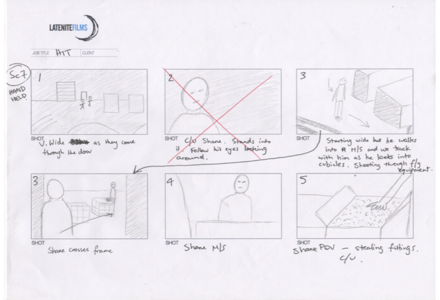
The most important (and neglected) aspect of directing… Firstly I want to preface everything hereafter by saying that I’m not a director with decades of experience and countless awards to my name. I’m not in super high demand and I can assure you I’m not earning the big bucks. I’m relatively new…. ‘emerging’ as we like to call it. I still have a lot to learn and a long way to go to be able to eventually make the things I want to. But I will share with you something that I feel quite strongly about through my experiences so far. Something that I have noticed is often neglected, but is without doubt the single most important tool in the director’s arsenal – blocking.
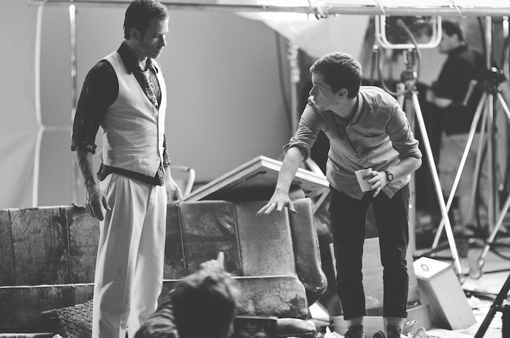
Sure the first half of the year seemed relatively quiet in comparison to previous years. But the second 6 months (ok 7 cause my mathematics when doing the last blog was way off) was when stuff got a little cray cray. Starting with a wee music video…
Just the other day after purchasing a pork roll (no chirri) from my favourite Vietnamese pork roll emporium on Smith Street, I took a moment to think about the ridiculous year that 2014 had been. In a personal sense, a company sense and just a general world sense.
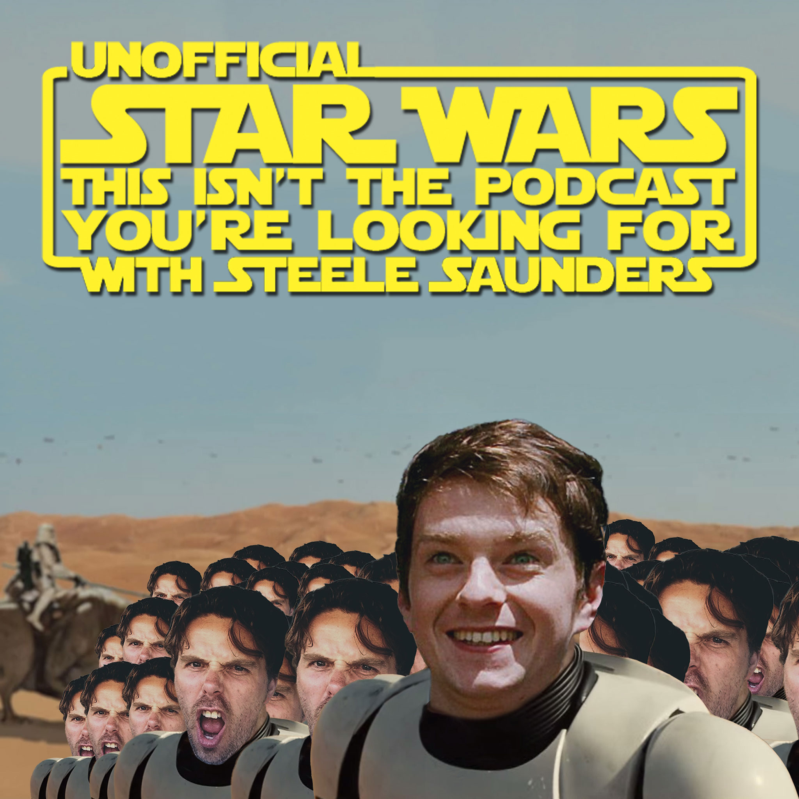
Earlier this week Michael Shanks was a guest on Steele Saunders podcast, ‘This Isn’t The Podcast You’re Looking For‘ talking about his recent George Lucas The Force Awakens teaser parody. You can listen here: Enjoy! michaelpodcast
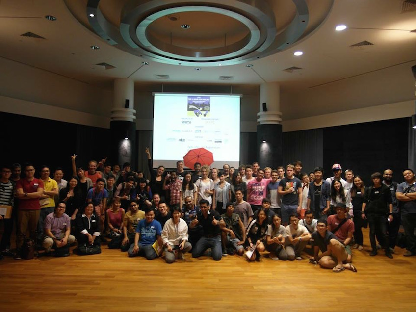
48-bts-00 Every year, the LateNite Films team competes in the 48 Hour Film Project. As a documentary filmmaker, if I’m in the country, I’ve always helped out in whatever way I can, as an editor, AD or simply carrying heavy boxes up stairs. I LOVE the experience of it all. It’s basically one intense shitstorm of creativity and problem solving that brings together some of my all time favourite people in Melbourne. The concept, (as I presume most people reading this are already aware of) is that you have 48 hours to make a film.
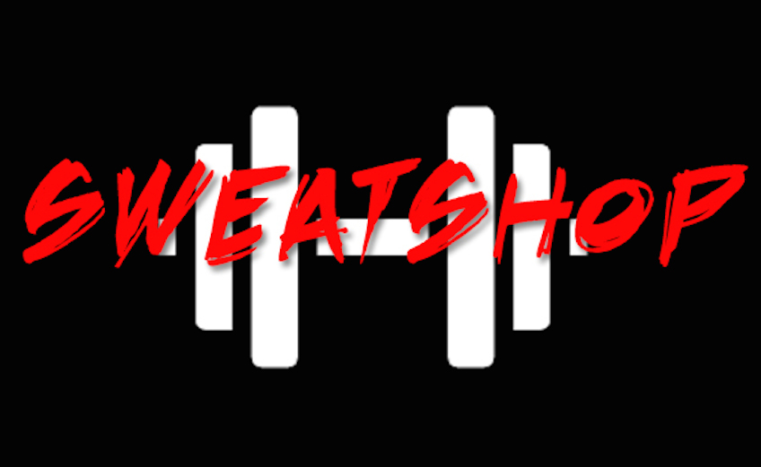
Today we have a special guest blog entry from long-time friend and collaborator, Alistair Marks. Alistair has worked with MTV, Nickelodeon and recently spent a year following Samuel Johnson around Australia as director of the Network 10 documentary Love Your Sister.
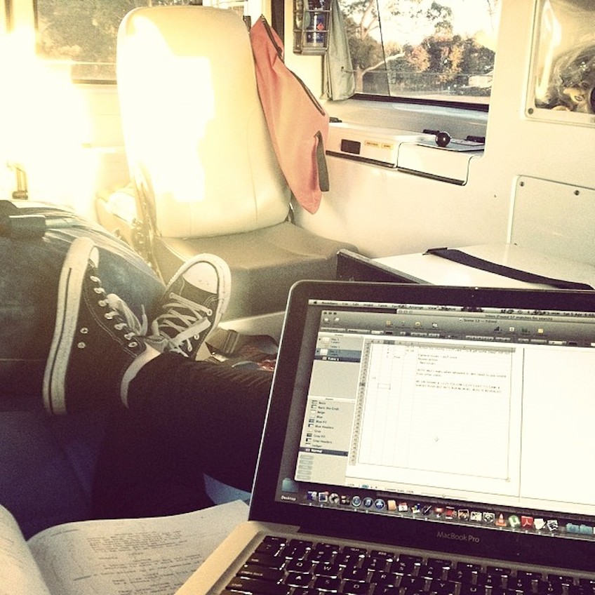
After some deliberation and a few lacklustre attempts, I asked myself what exactly I was trying to do with this little corner of the Internet. Perhaps it’s best to start simple. Hello. My name is Sumah Hurley. I’ve had the good fortune to work for and with the brilliant minds behind LateNite Films and through a cruel twist of fate they’ve conscripted my humble self to write a blog. This is that blog: the happenings of a fresh cadet thrown into the midst of the bustling Melbourne film & television scene.
On 19 July 2014, Inspiration Rentals screened three short films commissioned to show off the brand new Dragon camera from Red Digital Cinema. We were very fortunate to be given the opportunity to create one of those short films! The short film we made, Palindromes is currently commencing a film festival circuit, so we can’t share it online quite yet, but in the meantime you can read about the event here, and watch a recording of the event above. Enjoy!
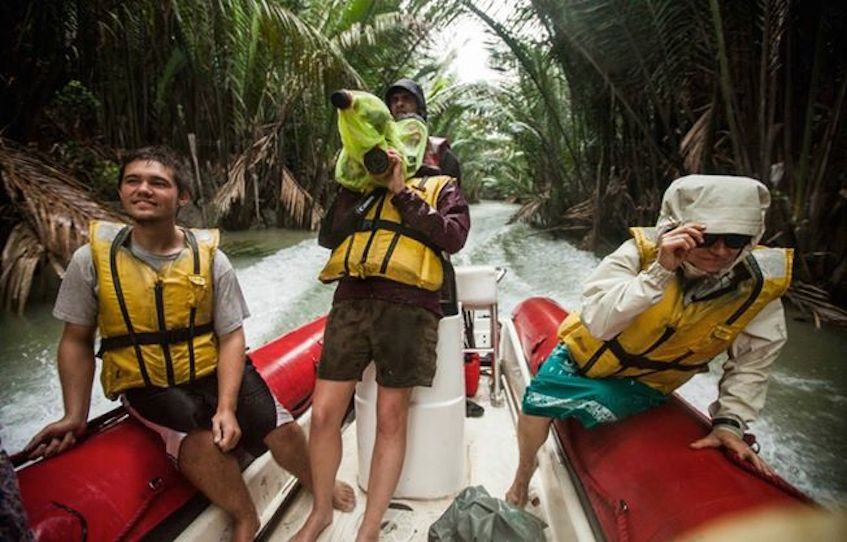
It’s midnight on the last night of shooting what was an incredible documentary project in the Gulf Province of Papua New Guinea. I’m exhausted beyond belief – but I’m going to write this blog post. Even if it kills me. BOOM. I read an article a long while ago, that really stuck with me, about how artists and creative people often feel like “fakes” even once they are incredibly successful.
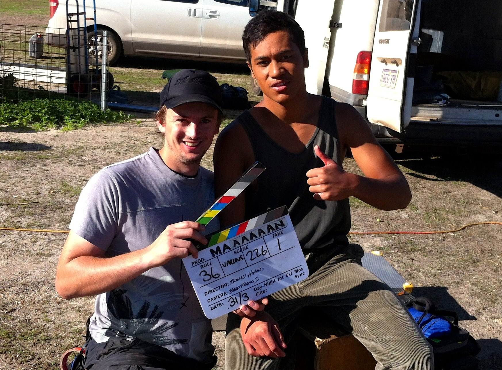
Early last year Chris Hocking flew up to Western Australia to help our very good friends Dave Christison (Producer) and Richard Hughes (Director) with their epic short film ‘MAN’ – an award winning 19-minute short drama that explores the underbelly of Australia’s regional drug epidemic and tackles the universal theme of what it means to be a man.
Written by Chris Hocking on 19th July 2014 We recently teamed up with Sportsbet to produce three little funny online videos based around the World Cup. Enjoy!
Michael Shanks recently helped out with Visual Effects on this beautiful and quirky music video for Vance Joy’s debut album, Dream Your Life Away, directed by the very talented Luci Schroder. We first worked with Luci on a TVC she directed for The Big Issue back in 2009 – and it’s so nice to see she’s still kicking goals and creating wonderful art.
Michael Shanks recently helped out on this impressive (and slightly silly) music video for Dan Webb’s debut album Sandstorm, directed by our good friend, Kess Broekman-Dattner. It was colour graded by the amazingly talented CJ Dobson from Pocket Post, and crewed by some of our favourite people in the world (including Austin Haigh, Tom Savige, Jesse Maskell and Glenn Clayton). Enjoy!
One of the most popular blog posts we’ve ever done has been on Calculating Timecode in Excel. Even though it’s now around 3 years old, it still gets a constant amount of views each week. Although the Excel article is still relevant and useful – personally, I don’t actually use Microsoft Excel very often any more, much preferring Apple’s Numbers (which comes free with every Mac; and iPad/iPhone for that matter). Unfortunately however, getting timecode to work successfully and reliably in Numbers has never been something I’ve been able to fully accomplish. Hopefully one day someone puts together some incredibly clever AppleScripts that add this functionality, however in the meantime…
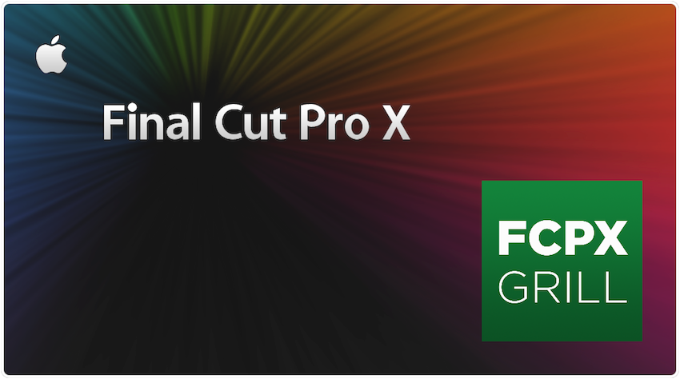
fcpxgrilllogo As someone who spends a lot of time driving from shoot to shoot, I’m a massive fan of audio podcasts. My good old trusty Fifth Generation iPod is constantly stocked up with a huge amount of nerdy film and tech related podcasts such as: – SciFi Idols: Maggie McFee chats about Sci-Fi history, trivia and things you may have missed about your favourite sci-fi film, writer, robot, artist, creator or filmmaker. Maggie is awesome, and it’s great learning the history of such amazing projects and films. – The Nerdist: Chris Hardwick, Jonah Ray and Matt Mira have a very informal and normally completely random and hillarious conversation with someone famous. Listening to this podcast is like gate-crashing a discussion at a house party. – digitalCINEMAcafe: Chris Fenwick & Alex MacLean have an open discussion with industry professionals. Chris and Alex are awesome – and they bring on some truly fantastic guests. – The Edit Bay: Shane Ross tells stories from the edit bay. The bad clients, the disasters, the triumphs… the fun stuff. This is a really short, really tight, really awesome scripted podcast – highly recommended! – The Terence and Philip Show: Terry Curren and Philip Hodgetts bring their not-politically-correct opinions on Avid, Adobe, Apple, post production, production, distribution and pretty much anything they want to talk about. The show has no fixed duration or schedule, taking the form of a free-form discussion between the hosts, who bring their years of industry knowledge to the discussion. Terence and Philip aren’t afraid to talk about extremely complex and technical subjects – which is great. – This Week in Enterprise Tech: Father Robert Ballecer, aka Friar Tech explores the complex, cutting edge world of enterprise technology with IT professionals explaining the ins and outs of enterprise solutions. This podcast gets very nerdy, very quickly – and it’s definitely not film or television related what-so-ever, but if you’re into routers, switches, firewall’s, VPNs and cabling, then this is the podcast for you! – This Week in Tech: Leo Laporte and other tech luminaries such as Patrick Norton, Kevin Rose, John C. Dvorak have a roundtable discussion about the latest trends in digital technology. Released every Sunday by midnight Pacific. Leo is king of the tech podcasting world and has created an empire from this little podcast. Highly entertaining and enjoyable. – The Coloristos ColorCast: Josh Petok (a colourist working on reality and episodic television in Los Angeles), Juan Salvo (a colourist and online editor for films and commercials in New York) and Jason Myres (a colourist and post-production engineer in Los Angeles) talk about Film and Television Color Grading, Color Science, and Post-Production. Josh, Juan and Jason are incredibly talented, and very, very smart – and because they work in different markets all have a very different perspective on highly complex creative and technical discussions. – That Post Show: Kanen Flowers has a roundtable discussion with industry experts about the art and science of video, film and post production. Kanen is one of the best interviewers in the podcasting space. He’s super intelligent, and just a joy to listen to – he also gets some of the best experts in the industry to chat on the show. Rather than focusing on the super high end – Kanen really tries to focus on the independent scene, which is fantastic. – Ruining It For Everyone: A weekly podcast for geeks, by geeks. Your hosts Maggie McFee and Christopher Harrington discuss everything in excruciating detail, from video production to how to make your own giant robot. Each week they take a topic, deconstruct it, and if you’re lucky, put it back together without any leftover parts. Nerdy. Fun. I spent a lot of time yelling at the radio. – fxphDOD: John Montgomery and Mike Seymour talk about the inner working of their online training site, fxphd, but also spend a lot of time discussing VFX and film industry issues in general. Very casual, and very enjoyable. – the rc: Mike Seymour and Jason Wingrove talk about digital cinema, filmmaking and cutting edge imaging. I absolutely love Mike and Jason – they’re incredibly smart and enjoyable to listen to. Although the show is quite structured, they’re not afraid to go down some serious rat holes! – fxpodcast: Mike Seymour (and occasionally Jeff Heusser & John Montgomery) talk with industry professionals about high-end visual effects, production and post. This is a serious hardcore interview show. Mike chats with some of the most senior and high-end artists and technicians in the industry and gets extremely detailed and geeky. – the vfx show: Each show Mike Seymour and friends discuss the VFX and filmmaking of a single movie in a huge amount of detail. What’s great about this show is that most of the time you have three people on the panel with completely different views and opinions on the films. Sometimes it gets heated – but it’s always a incredibly intelligent discussion.
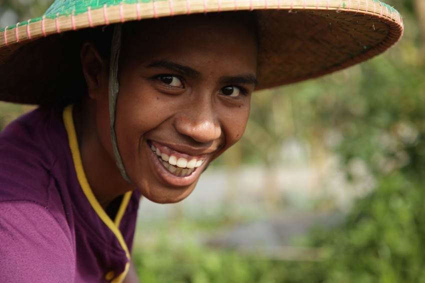
I sat in the bumpy back seat of the car gazing out the window, surrounded by rugged cliffs, leaning palms and paddy fields, wondering what my Christmas day would be like this year. As we got closer to our destination, the low clouds began to reveal the volcano of Gunung Gede and the thought struck once again (as it often does in this region) that Indonesia really is a breathtaking country.
Men’s 500 metre In Sochi’s Baby Park Stadium. Created by: Michael Shanks Commentary by: Michael Shanks & Nicholas Issell Featuring: Nicholas Colla and a Banana Special Thanks to: Chris Hocking & Louie McNamara
Michael Shanks recently helped out on this beautiful music video for All The Colours, directed and shot by our very good friend, Edward Goldner. It was colour graded by the amazingly talented CJ Dobson from Pocket Post. Enjoy!
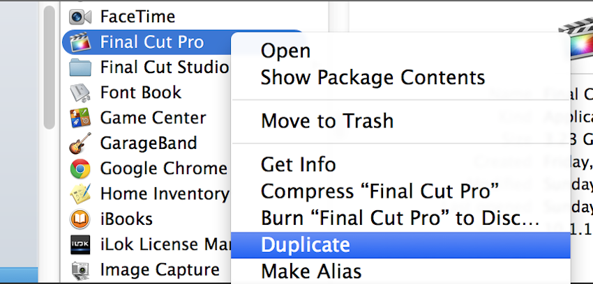
UPDATE (JUNE 2017): The PEAppDebugPreferencesModule.nib file no longer exists in the Final Cut Pro 10.3.4 package, but has been replaced with PEAppAudioPreferencesModule.nib and PEAppUserPreferencesModule.nib. Back in November last year, I was listening to a FCPX Grill episode with Alex Gollner, where he talked about talked about a secret “debug mode” he discovered whilst looking through all the FCPX .plist and .nib files.
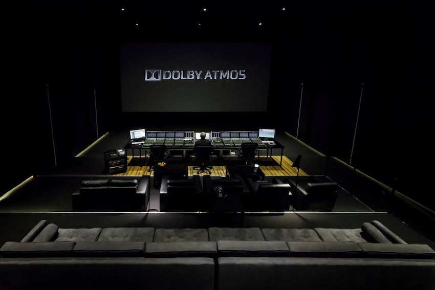
Last night, thanks to the fantastic people at the Australian Screen Sound Guild, I had the opportunity to check out the latest ground-breaking Dolby Atmos technology at Soundfirm’s amazing new Port Melbourne facility – the first and only post production theatre in Australia to deploy this truly awesome technology.
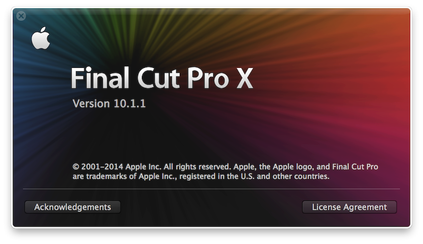
fcpx Ever since Apple announced Final Cut Pro X (pronounced “Final Cut Pro Ten”) back in April 2011 I have been keeping a very close eye on it. Like many people, as soon as it was released in June 2011, I instantly bought and downloaded it, and started playing. You could see it had potential – but it was so different to it’s predecessor and lacked so many important basic functions. Although I’ve always had it installed on my laptop, and opened it up after each update Apple pushed out – it never looked compelling enough to actually use for a job.
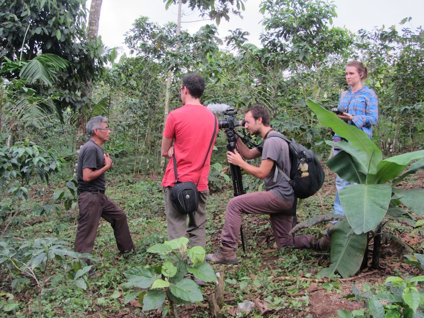
This Guest Blog has been written by our good friend, Joel Sharpe. Enjoy! In this post I’m going to explain my process working with translation on a recent film I did for NGO As Green As It Gets in Guatemala. Like most documentarians, having very little budget to deal with means creating a workflow that requires as little time with a paid translator as possible. Here is how I dealt with it.
Woody Allen’s possible “loose retelling” of A Streetcar Named Desire starring a perfect cast consisting of award worthy performances by Sally Hawkins and
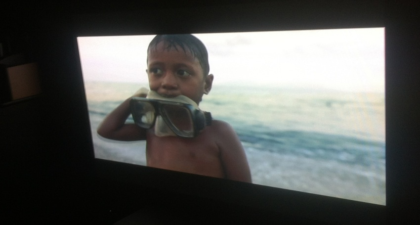
There is no better place to learn about building a sustainable film and television industry than Denmark. Those clever Danish folk have continued to build
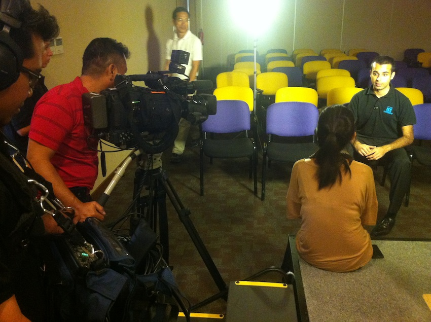
For the past couple of years, Chris and I have had the same conversation when the end of the year rolls around. It starts with me pacing back and forth, stressing that we haven’t done anything and that we’ve wasted our year, and it ends with Chris shaking his head, somehow sending me an email mid conversation whilst bouncing happily on a gym ball before reassuring me that we were in fact, pretty bloody busy.
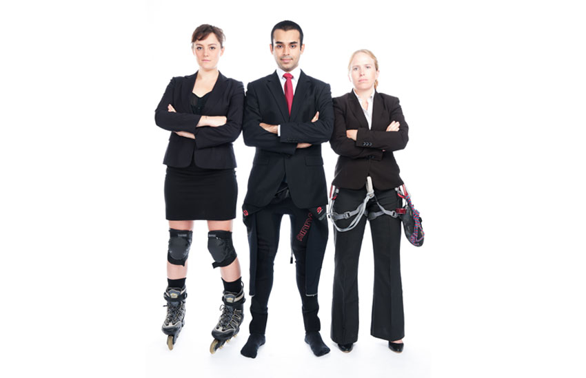
001 Since our Spinning Dreams (in Timor-Leste) Film in 2010 – Ashwin and I have worked together tirelessly together to create important Documentaries which inspire others. Four massive projects later in 4 countries around Asia, and over SG$100,000 raised for our causes, we created our first community message specifically directed to speak to the heart of local Singaporeans.
Michael Shanks recently helped out with the Visual Effects on this impressive music video for Horrorshow, directed by the very talented Kess Broekman-Dattner. It was also colour graded by our wonderful friend Roslyn Di Sisto. Enjoy! You can read about the making of here.
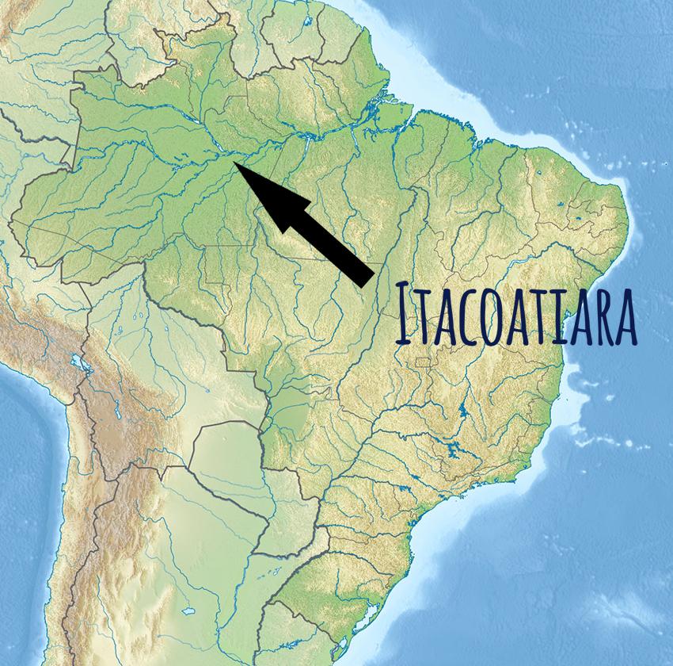
Way back in March this year, I once again had the privilege of filming for the Swiss non-profit organisation myclimate. The more I work with this energetic team, the more respect and admiration I have for their projects. This time, the destination was Itacoatiara, which resides by the famous Amazon River. I was being sent to film another carbon-offset project, this time a biomass energy plant. The plant, BK Energia, is situated in the heart of the Amazon Rainforest of Brazil.
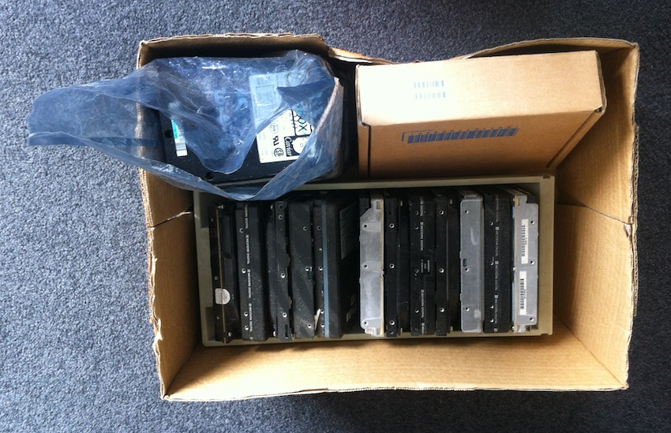
drives I’ll be honest – I’m a bit of a hoarder and collector. I absolutely love film books, DVDs and all kinds of film gear. Our office, and my home (especially the garage!) is jam packed with all kinds of wonderful film related books, DVDs, BluRay’s, Lights, Grip Gear, Tripod’s, Magic Arm’s, etc.
drblake ( Or… My time on The Doctor Blake Mysteries ) So with my final day of shooting on The Doctor Blake Mysteries last Friday I thought I would write a short blog about my time on the high rating ABC murder mystery. Over the course of the last 6-7 weeks I have been lucky enough to be attached to director Ian Barry (who subsequently is celebrating 50 years in the Film & TV industry this year). I honestly couldn’t have been more fortunate as Ian is not only one of the most incredible directors but also human beings that I have ever met. Even after 50 years the man is still as passionate and energetic about making great film & television as I imagine he was when he first started all those years ago.